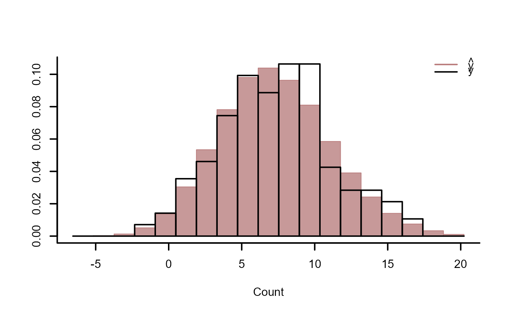
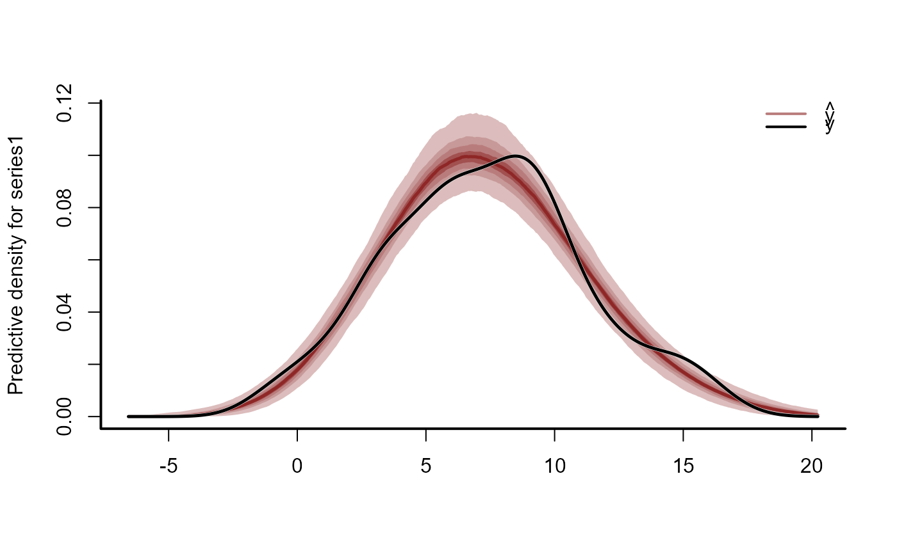
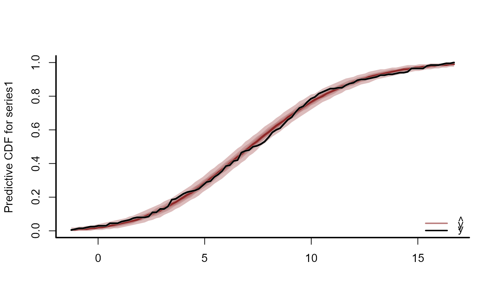
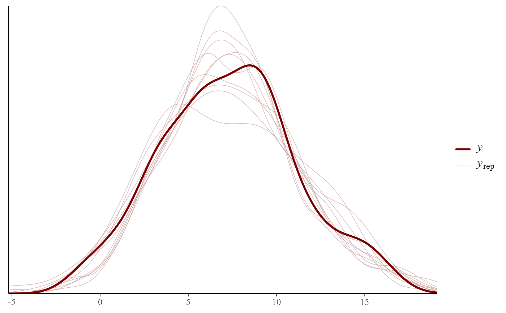
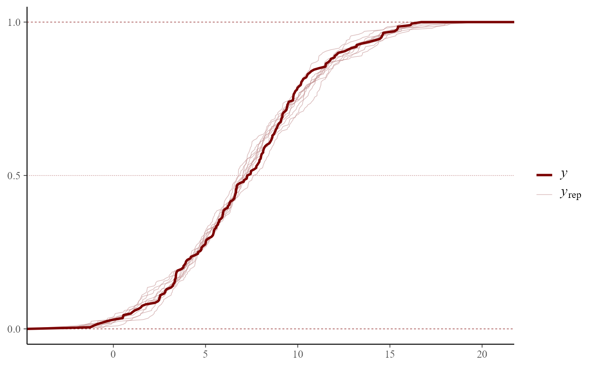
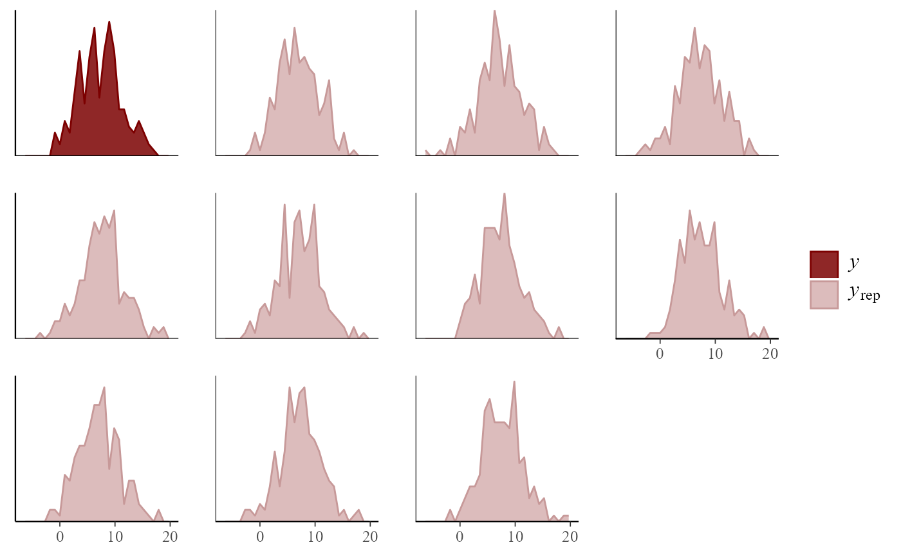

Plot conditional posterior predictive checks from mvgam models
Usage
ppc(object, ...)
# S3 method for mvgam
ppc(
object,
newdata,
data_test,
series = 1,
type = "hist",
n_bins,
legend_position,
xlab,
ylab,
...
)Arguments
- object
listobject returned frommvgam. Seemvgam()- ...
further
pargraphical parameters.- newdata
Optional
dataframeorlistof test data containing at least 'series' and 'time' for the forecast horizon, in addition to any other variables included in the linear predictor offormula. If included, the observed values in the test data are compared to the model's forecast distribution for exploring biases in model predictions. Note this is only useful if the samenewdatawas also included when fitting the original model.- data_test
Deprecated. Still works in place of
newdatabut users are recommended to usenewdatainstead for more seamless integration intoRworkflows- series
integerspecifying which series in the set is to be plotted- type
characterspecifying the type of posterior predictive check to calculate and plot. Valid options are: 'rootogram', 'mean', 'hist', 'density', 'prop_zero', 'pit' and 'cdf'- n_bins
integerspecifying the number of bins to use for binning observed values when plotting a rootogram or histogram. Default is50bins for a rootogram, which means that if there are>50unique observed values, bins will be used to prevent overplotting and facilitate interpretation. Default for a histogram is to use the number of bins returned by a call tohistin baseR- legend_position
The location may also be specified by setting x to a single keyword from the list "bottomright", "bottom", "bottomleft", "left", "topleft", "top", "topright", "right" and "center". This places the legend on the inside of the plot frame at the given location. Or alternatively, use "none" to hide the legend.
- xlab
label for x axis.
- ylab
label for y axis.
Value
A base R graphics plot showing either a posterior rootogram (for type == 'rootogram'),
the predicted vs observed mean for the
series (for type == 'mean'), predicted vs observed proportion of zeroes for the
series (for type == 'prop_zero'),predicted vs observed histogram for the
series (for type == 'hist'), kernel density or empirical CDF estimates for
posterior predictions (for type == 'density' or type == 'cdf') or a Probability
Integral Transform histogram (for type == 'pit').
Details
Conditional posterior predictions are drawn from the fitted mvgam and compared against
the empirical distribution of the observed data for a specified series to help evaluate the model's
ability to generate unbiased predictions. For all plots apart from type = 'rootogram', posterior predictions
can also be compared to out of sample observations as long as these observations were included as
'data_test' in the original model fit and supplied here. Rootograms are currently only plotted using the
'hanging' style.
Note that the predictions used for these plots are conditional on the observed data, i.e. they
are those predictions that have been generated directly within
the mvgam() model. They can be misleading if the model included flexible dynamic trend components. For
a broader range of posterior checks that are created using unconditional "new data" predictions, see
pp_check.mvgam
Examples
# \donttest{
# Simulate some smooth effects and fit a model
set.seed(0)
dat <- mgcv::gamSim(1, n = 200, scale = 2)
#> Gu & Wahba 4 term additive model
mod <- mvgam(y ~ s(x0) + s(x1) + s(x2) + s(x3),
data = dat,
family = gaussian(),
chains = 2,
silent = 2)
# Posterior checks
ppc(mod, type = 'hist')

ppc(mod, type = 'density')

ppc(mod, type = 'cdf')

# Many more options are available with pp_check()
pp_check(mod)
#> Using 10 posterior draws for ppc type 'dens_overlay' by default.

pp_check(mod, type = "ecdf_overlay")
#> Using 10 posterior draws for ppc type 'ecdf_overlay' by default.

pp_check(mod, type = 'freqpoly')
#> Using 10 posterior draws for ppc type 'freqpoly' by default.
#> `stat_bin()` using `bins = 30`. Pick better value with `binwidth`.

# }